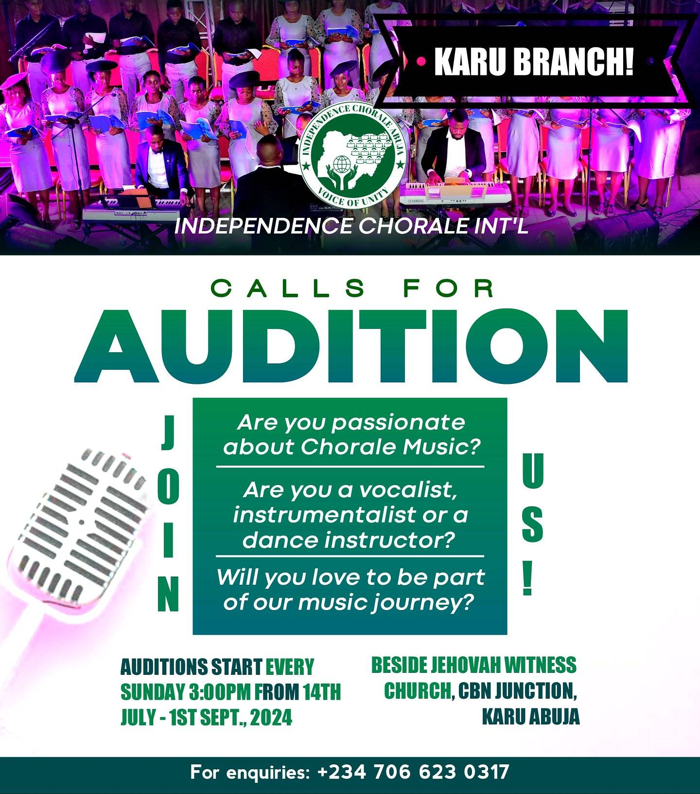

Welcome home
Experience Independence Chorale


Become a Member
Love choral music? Start your journey with us through our simple online form.
Apply nowIndependence Chorale Abuja brings passionate voices together through inspiring choral performances, learning, fellowship and musical excellence.

Love choral music? Start your journey with us through our simple online form.
Apply nowExplore the members of each section of Independence Chorale.

Independence Chorale began when passionate singers came together to explore choral music. Five years on, the vision continues through performance, learning and community.
Support rehearsals, performances, training and future music projects.